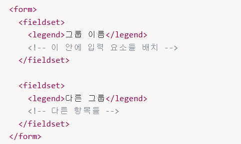

🦄 1. 폼의 구조
🫧 1.1<form> 태그 기본 구조
<form name="fo" method="get">...</form><form>태그는 폼 전체를 감싸는 컨테이너 역할.- 이 안에
<input>,<button>,<textarea>
같은 태그들이 실제로 사용자 입력을 받게 되고,
이러한 입력 요소들을 모두 포함시켜야 서버로 전송할 수 있다.
💎name
폼의 이름을 지정한다이 이름은 주로 자바스크립트에서 폼을 식별하거나 접근할 때 사용된다.
즉, HTML문서 안에 여러 개의 폼이 존재할 경우, 각각을 구분하기 위해 부여하는 이름표
<form name="loginForm">...</form>document.loginForm이라고 작성하여 이 폼을 직접 참조할 수 있게 된다.
💎action
폼 데이터를 어느 서버로 보낼지를 결정한다.- 사용자가 입력을 마치고 submit 버튼을 눌렀을 때
브라우저가 데이터를 전송할 목적지 주소(URL)을 알려주는 역할. - 이 속성에 지정되는 값은 주로 서버 쪽 프로그램의 주소이다.
서버 프로그램은 사용자가 입력한 데이터를 받아 처리하는 역할을 한다.
action="https://search.naver.com/search.naver"serch.naver.com서버로 연결하여 serch.naver라는 이름의 프로그램을 실행하도록 요청
💎 method속성(GET, POST)
폼 데이터를 서버로 전송할 때 사용할 전송 방식을 지정한다.- GET
사용자가 입력한 데이터를 url의 끝부분에 붙여서 전송한다.
단순한 검색 조회용 요청에는 적합하지만 보안성 낮다 - POST 데이터를 HTTP메시지의 본문(body)에 담아 전송한다.
- 주소창에는 입력 내용이 보이지 않는다.
- 비밀번호나 개인 정보처럼 외부에 노출되면 안되는 데이터를 보낼 때 사용.
🫧2. 폼 구조 태그
두 태그는 폼의 시각적/논리적 구조를 잡는 역할을 한다.→ 사용자 입력을 받는 태그가 아니다
💎<fieldset>태그
<fieldset> ... </fieldset>- 폼의 내용이 시각적으로 박스 형태로 묶여 표시된다.(기본적으로 테두리가 생긴다)
- 묶인 그룹을 하나의 단위처럼 관리할 수 있다(비활성화 등...)
💎<legend>태그
<fieldset>바로 안에 위치해야 하며, 해당 영역의 제목(label)을 표시한다.
제목 텍스트를 넣는 용도로만 사용한다.

🦄 2. input태그 유형
<input> : 한 줄 입력창, 체크박스, 라디오버튼, 파일 선택창 등 다양한 입력 형태를 만든다.
| 폼 요소 | 설명 |
|---|---|
| WebM | video/mp4 |
| MP4(H.264) | video/webm |
| Ogg | video/ogg |